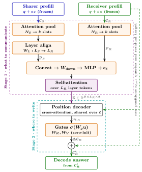

Why it matters왜 중요한가
Text is a terrible wire format between two models that both already think in continuous vectors.
이미 둘 다 연속 벡터로 사고하는 두 모델 사이에서, 텍스트는 형편없는 전송 포맷이다.
Text-to-text hand-off puts autoregressive decoding on the critical path — 1139.5 ms end-to-end here — and it is structurally sender-centric: the sharer writes a message with no sight of what the receiver already knows or still needs. Latent KV protocols removed the decode step, but kept the sender-centric part. C2C still required both models to read the same input; LCF-X freed that constraint but still built the summary from the sharer alone, broadcast one summary per layer, and assumed matched depth and KV-head geometry. XKV attacks all three of those leftovers at once, and the interesting result is that the fix is cheaper than what it replaces rather than a quality-for-latency trade.
텍스트 기반 인계는 자기회귀 디코딩을 크리티컬 패스에 올려놓고(여기선 종단간 1139.5 ms), 구조적으로 송신자 중심이다. 송신자는 수신자가 이미 무엇을 알고 무엇이 더 필요한지 보지 못한 채 메시지를 쓴다. 잠재 KV 프로토콜은 디코딩 단계는 없앴지만 송신자 중심이라는 성질은 그대로 남겨뒀다. C2C는 여전히 두 모델이 같은 입력을 읽어야 했고, LCF-X는 그 제약은 풀었지만 요약을 송신자만으로 만들고, 레이어당 하나의 요약을 브로드캐스트했으며, 깊이와 KV 헤드 기하가 맞는다고 가정했다. XKV는 이 세 가지 잔여 제약을 한꺼번에 공략하는데, 흥미로운 지점은 그 해법이 품질과 지연을 맞바꾸는 것이 아니라 대체 대상보다 더 싸다는 것이다.

By the numbers핵심 숫자
The headline table핵심 표
| Method | Macro score | Best/tied cells | Avg. rank | Comm. (ms) | E2E (ms) | Trainable params |
|---|---|---|---|---|---|---|
| T2T (text) | 48.86 | 11/45 | 2.34 | – | 1139.5 | 0 |
| LCF-X | 49.76 | 4/45 | 2.29 | 59.9 | 227.9 | 19.03M |
| XKV | 52.37 | 31/45 | 1.37 | 5.8 | 167.6 | 4.55M |
The two ideas that do the work핵심을 만드는 두 아이디어
Symmetric dual-cache pooling
Learned query vectors attend over the raw cache positions of both models and pool keys and values with the same weights, collapsing N positions to k slots in one vectorised pass per layer and head. Because the receiver's own state is pooled alongside the sharer's, the decision of what is worth communicating is made jointly rather than authored blind by the sender. A learned affine map along the layer axis then converts the sharer's LS layers into the receiver's LR, so mismatched depth and KV-head geometry stop being a precondition.
학습된 쿼리 벡터가 양쪽 모델의 원본 캐시 위치에 어텐션하고 동일한 가중치로 키와 값을 함께 풀링해, 레이어·헤드마다 한 번의 벡터화 연산으로 N개 위치를 k개 슬롯으로 접는다. 송신자 것과 나란히 수신자 자신의 상태도 풀링되므로, 무엇을 전달할 가치가 있는지는 송신자가 눈감고 쓰는 게 아니라 공동으로 결정된다. 이어 레이어 축을 따라 학습된 아핀 맵이 송신자의 LS개 레이어를 수신자의 LR개로 변환해, 깊이와 KV 헤드 기하의 불일치가 더 이상 전제 조건이 아니게 된다.
Per-position retrieval, not broadcast
The pooled slots are squeezed through a bottleneck MLP into exactly one memory token per receiver layer, and a pre-norm transformer block mixes those LR tokens so the memory is genuinely cross-layer. Then each raw receiver position flattens its own K and V into a query, cross-attends the whole memory, and gets back a ΔK/ΔV scaled by a sigmoid gate that is separate per position, per KV head, and per cache type. The output heads are zero-initialised, so an untrained translator is exactly the identity — the model only ever learns corrections on top of a working receiver.
풀링된 슬롯들은 병목 MLP를 거쳐 수신자 레이어당 정확히 메모리 토큰 하나로 압축되고, pre-norm 트랜스포머 블록이 이 LR개 토큰을 섞어 메모리를 진짜 크로스레이어로 만든다. 그 다음 수신자의 각 원본 위치가 자기 K와 V를 펼쳐 쿼리를 만들고, 메모리 전체에 크로스어텐션해 ΔK/ΔV를 돌려받는다. 이 값은 위치별·KV 헤드별·캐시 종류별로 따로 매겨지는 시그모이드 게이트로 스케일된다. 출력 헤드는 0으로 초기화되어 있어 학습 전 번역기는 정확히 항등 함수이며, 모델은 잘 돌아가는 수신자 위에 보정만 얹어 학습한다.
One-shot prefix edit
The translator fires once, on the receiver's prefill cache, before the first generated token. After that the receiver decodes greedily as usual — there is no per-token communication overhead at all, which is why the end-to-end number stays close to plain single-model inference while text hand-off pays for a full generated message.
번역기는 첫 생성 토큰 이전에 수신자의 프리필 캐시에 대해 딱 한 번 작동한다. 그 뒤로 수신자는 평소처럼 그리디 디코딩을 하며 토큰당 통신 오버헤드가 전혀 없다. 텍스트 인계가 메시지 한 편을 통째로 생성하는 값을 치르는 동안 종단간 수치가 단일 모델 추론에 가깝게 유지되는 이유다.
How it works어떻게 작동하나
- Prefill privately. 각자 프리필한다. Sharer and receiver each encode their own disjoint half of the evidence plus the shared question; neither half is sufficient alone. Both models stay frozen throughout.송신자와 수신자가 각자 서로 겹치지 않는 절반의 근거와 공통 질문을 인코딩한다. 어느 쪽 절반만으로도 답할 수 없다. 두 모델은 끝까지 얼어 있다.
- Pool both caches to k slots. 양쪽 캐시를 k개 슬롯으로 풀링한다. Learned queries produce attention weights over cached positions, and those same weights pool keys and values — a single batched operation across layers, heads and slots, with padding masked out.학습된 쿼리가 캐시 위치들에 대한 어텐션 가중치를 만들고, 그 동일한 가중치로 키와 값을 풀링한다. 레이어·헤드·슬롯을 가로지르는 한 번의 배치 연산이며 패딩은 마스킹된다.
- Align depth, build the joint memory. 깊이를 정렬하고 공동 메모리를 만든다. The sharer's summaries are mapped onto the receiver's layer axis, concatenated with the receiver's own, compressed to one token per layer, given a layer embedding, and mixed by a transformer block. Its length is LR — independent of prompt length.송신자 요약을 수신자의 레이어 축으로 사상하고, 수신자 자신의 요약과 결합한 뒤 레이어당 토큰 하나로 압축하고, 레이어 임베딩을 더해 트랜스포머 블록으로 섞는다. 길이는 LR로 프롬프트 길이와 무관하다.
- Each position pulls what it needs. 각 위치가 필요한 것을 끌어온다. Every receiver cache row queries the memory through a shared decoder and receives its own gated ΔK/ΔV; residuals at padding positions are zeroed. The cache becomes CR + ΔCR.수신자 캐시의 모든 행이 공유 디코더를 통해 메모리를 질의하고 자기 몫의 게이트된 ΔK/ΔV를 받는다. 패딩 위치의 잔차는 0으로 만든다. 캐시는 CR + ΔCR가 된다.
- Decode normally. 평소대로 디코딩한다. Training is teacher-forced cross-entropy on the answer tokens, with gradients flowing through the frozen receiver's attention; only the 4.55M-parameter translator is updated.학습은 정답 토큰에 대한 teacher-forced 크로스엔트로피이며, 그래디언트는 얼어붙은 수신자의 어텐션을 통과해 흐른다. 갱신되는 것은 4.55M 파라미터짜리 번역기뿐이다.
What to take away그래서, 가져갈 것
Receiver-awareness turns out to be nearly free. Removing receiver pooling costs 0.46 points and removing per-position retrieval costs 0.83, while each buys back only ~1 ms of translator time and ~3% of end-to-end latency. The components that make the channel smarter are not the ones making it slow.
수신자 인지 능력은 사실상 공짜였다. 수신자 풀링을 빼면 0.46점, 위치별 검색을 빼면 0.83점을 잃는데, 그 대가로 되찾는 건 번역기 시간 약 1 ms와 종단간 지연 약 3%뿐이다. 채널을 똑똑하게 만드는 구성요소가 채널을 느리게 만드는 구성요소는 아니었다.
The real latency villain was the pooling scheme, not the idea of latent communication. Swapping XKV's single-pass direct pooling back to LCF-X's two-stage span pooling inflates translator time by 572.6% and loses 0.94 points — it was never a speed-for-accuracy trade, just a worse operator.
진짜 지연의 범인은 잠재 통신이라는 발상이 아니라 풀링 방식이었다. XKV의 단일 패스 직접 풀링을 LCF-X의 2단계 span 풀링으로 되돌리면 번역기 시간이 572.6% 늘어나고 동시에 0.94점을 잃는다. 속도와 정확도의 맞교환이 아니라 그냥 더 나쁜 연산자였던 것이다.
Cache-level channels no longer need matched architectures. A learned layer-axis map plus receiver-shaped output heads is enough to bridge different families, depths, KV-head counts and tokenizers — which is what makes latent communication usable in a system assembled from whatever models you actually have.
캐시 수준 통신 채널은 더 이상 동일한 아키텍처를 요구하지 않는다. 학습된 레이어 축 맵과 수신자 형태의 출력 헤드만으로 서로 다른 계열·깊이·KV 헤드 수·토크나이저를 잇기에 충분하다. 실제로 손에 있는 아무 모델이나 조립해 만든 시스템에서 잠재 통신이 쓸 만해지는 지점이 바로 여기다.